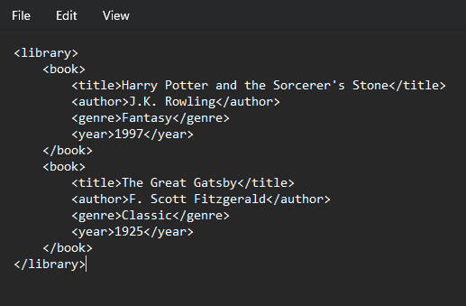

XML and Javascript
What is XML?
The markup language known as XML (Extensible Markup Language) establishes a set of guidelines for encoding documents in a way that is understandable by both computers and humans. Data storage and transmission, especially over the internet, is its intended use.
How is it used?
XML is used in various contexts such as:
- Data interchange: Structured data is frequently exchanged between many platforms, systems, and applications using XML.
- Configuration files: Software developers can describe settings and parameters in an organized manner by using XML for configuration files.
- Web services: XML serves as the basis for a number of web services protocols, including REST (Representational State Transfer) and SOAP (Simple Object Access Protocol), which allow clients and servers to exchange XML documents.
- Data storage: Documents with hierarchical data structures can benefit greatly from the usage of XML as a data storage format.
What does it look like?
Provided below is an example:
What is Javascript?
The main purpose of JavaScript, an interpreted high-level programming language, is to generate dynamic and interactive web content. Along with HTML and CSS, it is one of the fundamental technologies of the World Wide Web.
How is Javascript related to HTML and CSS?
JavaScript is related to HTML and CSS in the following ways: HTML: Script tags are frequently used to directly integrate JavaScript into HTML texts. It can react to user events, change the page dynamically, and work with the structure and content of HTML components. CSS: JavaScript has the ability to work with CSS classes and styles, enabling dynamic modifications to the look and feel of HTML elements. It is also capable of interacting with CSS transitions and animations.
What is an example of a JavaScript element?
Element: const x = document.getElementById("main");
const y = x.getElementsByTagName("p");
Property: const x = document.getElementById("main");
const y = x.getElementsByTagName("p");
Method: const person = {
firstName: "John",
lastName: "Doe",
id: 5566,
fullName: function() {
return this.firstName + " " + this.lastName;
}
};
Function: parseInt(). The parseInt() function, parses a string and returns an integer.